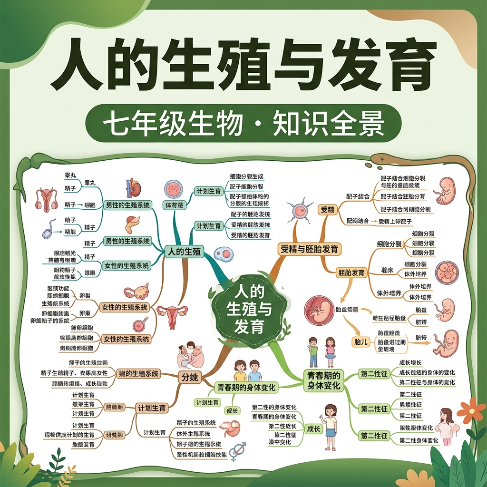

受精·胚胎发育·青春期——生命的诞生与成长

精子与卵细胞在输卵管结合，形成受精卵（合子）。含有来自父母双方的遗传物质。
受精卵进行有丝分裂（卵裂），细胞数量不断增多，沿输卵管向子宫移动。
胚泡进入子宫腔，植入子宫内膜，与母体建立联系，开始从母体获取营养。
主要器官系统基本形成，从胚胎发育为胎儿，通过胎盘和脐带从母体获取营养。
胎儿发育成熟，经子宫收缩，通过产道（阴道）娩出，新生命诞生。
将下列发育阶段拖入正确的顺序位置
1. 精子与卵细胞结合（受精）的场所是（ ）
2. 胎儿通过什么与母体进行物质交换（ ）
3. 关于青春期的说法，正确的是（ ）
4. 下列关于人类受精卵的说法正确的是（ ）
| 概念 | 定义 | 位置/说明 |
|---|---|---|
| 受精 | 精子与卵细胞结合 | 输卵管 |
| 着床（植入） | 胚泡嵌入子宫内膜 | 受精后约1周 |
| 胎盘 | 母胎物质交换器官 | 子宫内，分娩后排出 |
| 第二性征 | 青春期出现的性别特征 | 受性激素调控 |